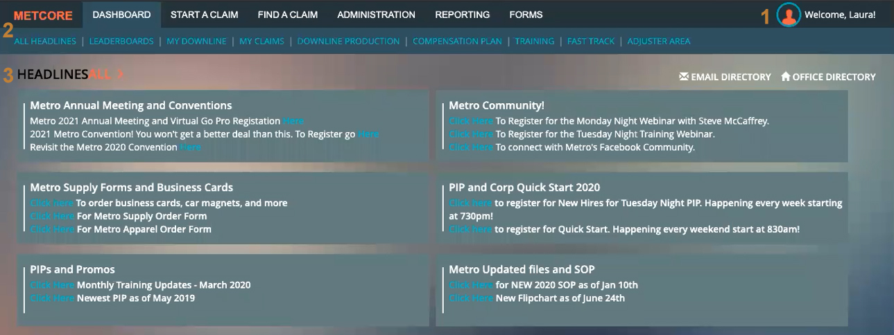

Getting started
This user guide describes step by step how to add, edit and delete new headlines and reports, and how to check any headlines created and saved on the Metcore platform. You can check the content section on the previous page for further details.
To get started with Metcore, log in to the platform with your account. Once you log in, the screen will show you the platform interface.

- Profile/Account area: On the upper-right side of the window, you will find a section with your profile name and photo. If you click the photo or name, you will have access to a variety of options and settings for your account and platform.
- Navigation bar: In this bar, on the upper side of the window, you will find six different tabs: Dashboard, Start a claim, Find a claim, Administration, Reporting and Form. Each one holds sections to navigate through, as shown on the Dashboard.
- Headlines: The headlines recently created by you or other contributors are displayed here, as well as the Email Directory and Office Directory sections on the upper-left side.
After getting familiar with the interface, you can go and check the Headlines section.